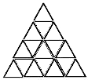
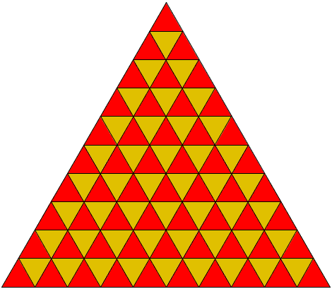

给格子染色 - 趣题两则
试想有这么一个正三角形围栏被分割成若干个相同大小的正三角形格子. (如图是分割成16个的情形, 为了方便这里只画出了16个的情形, 容易得到类似的划分产生的格子数是个平方数.)

现在假设初始时每个格子中都有一只蚂蚱, 听到一声令下之后它们都跳到自己所在格子的相邻格子(有公共边的两个格子称为相邻). 假设我们有这样的被划分成100个(而不是图中的16个, 但容易想象其划分方式)相同大小的正三角形的围栏, 在蚂蚱们集体跳跃9次之后, 试说明一定有至少10个格子是空的.
答案:

如图, 把其中相邻的格子染上不同的两种颜色, 容易计算, 其中红色的格子有55个, 黄色的格子有45个. 蚂蚱们每跳一次, 就会跳到另一种颜色的格子中. 这样第一次跳跃之后, 红色格子中原来的蚂蚱都不在了, 而从黄色的格子中调到红色格子中只有45只蚂蚱, 所以至少有10个红色格子是空的. 而且, 只要是奇数次跳跃之后, 都有这样的结论, 因此, 9次跳跃后, 至少10个格子中是没有蚂蚱的.
这让我想到一个类似的问题: 在一个8x8的棋盘上, 从左下角开始一个棋子只能移动到相邻的格子中. 这种情况下, 能否让棋子走过每一个格子一次且仅一次, 并且最终走到右上角的格子中?
答案是否定的. 如图是染成两色的棋盘, 这个棋子初始时处于灰色格子, 走遍这64个格子需要改变63次格子的颜色, 也就是最后一个格子的颜色应该是白色的, 但是右上角的格子颜色却是灰色的, 所以无论如何也不能走出符合要求的路线.
来源: cut the knot
今日惊讶发现: Mariah Carey的音域为5个八度, 超过了一把普通吉他的音域.